PyTorch | Deep Learning
What is PyTorch?
- Open-source Machine Learning library
- Based on the Torch library (Lua)
- Employed at:
- Facebook AI Research
- Tesla Autopilot
- Uber AI
What is PyTorch?
- Tape-based Automatic Differentiation
- Computations with GPU Acceleration
PyTorch Tensor
PyTorch Tensor
Parameters of interest!
(x.requires_grad=True) $\cap$ (x.is_leaf=True)
Automatic Differentiation (AD)
- Implementing backprop by hand is cumbersome!
- Gradient-based Learning: Derivatives!
- A way to compute derivatives automatically?
Automatic Differentiation (AD)
- It is not: Numerical Differentiation
- Expensive (forward pass for each derivative)
- Numerical error gets propagated!!
- In contrast, AD is efficient and numerically stable.
Automatic Differentiation (AD)
- It is not: Symbolic Differentiation
- Complicated expressions (redundant)
- AD provides the computed value and not the expression.
Example
| Expression | Derivative |
| initialize: $w, b$ | $ \frac{\partial\mathcal{L}}{\partial w}=\frac{\partial\mathcal{L}}{\partial z} x, \frac{\partial\mathcal{L}}{\partial b}=\frac{\partial\mathcal{L}}{\partial z} $ |
| $ z=wx+b $ | $ \frac{\partial\mathcal{L}}{\partial z}=\frac{\partial\mathcal{L}}{\partial y}\sigma^{'}(z) $ |
| $ y=\sigma(z) $ | $ \frac{\partial \mathcal{L}}{\partial y}=y-t $ |
| $ \mathcal{L}=\frac{1}{2}(y-t)^2 $ | $ \frac{\partial\mathcal{L}}{\partial\mathcal{L}}=1 $ |
Example: torch.autograd
import torch
w = torch.tensor([1.2], requires_grad=True)
b = torch.tensor([-0.4], requires_grad=True)
x, t = torch.tensor([2.0]), torch.tensor([1.0])
z = w*x + b
y = torch.sigmoid(z)
L = 0.5*(y-t)**2
L.backward() # compute dL/dw, dL/db
w.grad, b.grad # (tensor([-0.0250]), tensor([-0.0125]))
Example: torch.autograd
# higher-order derivatives
import torch
x = torch.tensor([3.], requires_grad=True)
y = x**2
dy_dx = torch.autograd.grad(y, x, create_graph=True) # 6
d2y_dx2 = torch.autograd.grad(dy_dx, x) # 2
torch.autograd: An engine for computing vector-Jacobian products!
torch.autograd DocumentationWhy GPU?
- Data-parallelism!
- Neural Networks: Parallel processing systems
Shifting to GPU
>> import torch
>> x = torch.tensor([2.]) # defined on CPU
>> x.device()
device(type='cpu')
>> x_gpu = x.cuda() # shifted to GPU
>> x_gpu
tensor([2.], device='cuda:0')
Optimization Loop
Example: Linear Regression

Why are we doing Linear Regression?
Example: Image Classification Network
Example: Image Classification Network
import torch.nn as nn
import torch.nn.Functional as F
class NeuralNetwork(torch.nn.Module):
def __init__(self):
self.conv1 = torch.nn.Conv2d(in_channels=3,
out_channels=64, kernel_size=(3,3))
self.conv2 = torch.nn.Conv2d(in_channels=64,
out_channels=128, kernel_size=(3,3))
self.maxpool = torch.nn.MaxPool2D(kernel_size=(3,3))
self.linear1 = torch.nn.Linear(..., 128)
self.linear2 = torch.nn.Linear(128, 64)
self.linear3 = torch.nn.Linear(64, 10)
def forward(self, x):
x = F.relu(self.conv1(x))
x = F.relu(self.conv2(x))
x = self.maxpool(x)
x = torch.flatten(x, 1)
x = F.relu(self.linear1(x))
x = F.relu(self.linear2(x))
x = F.softmax(self.linear3(x))
return x
Built-in Modules
torch.nntorch.optimtorch.utils
Advanced Practices
- Data Augmentation
- Tensorboard
- Multiprocessing
- Multi-GPU training